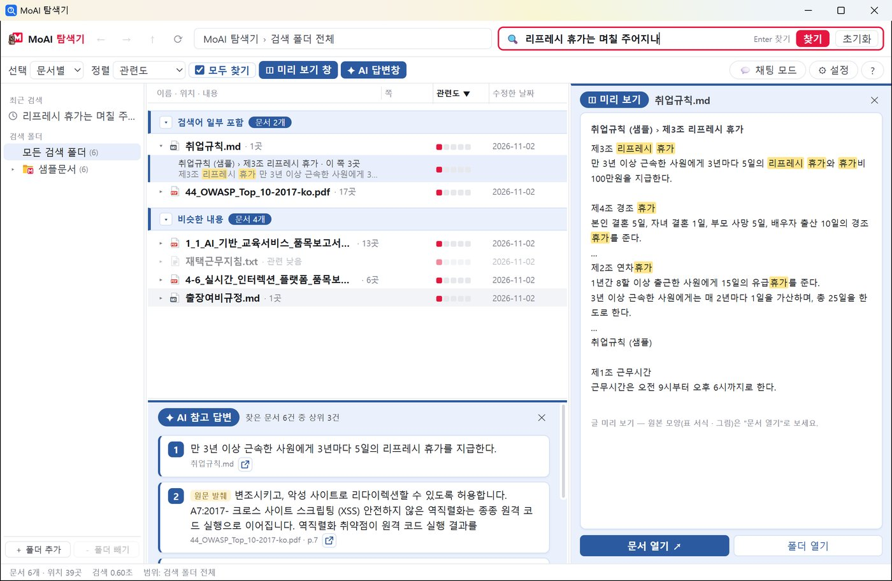
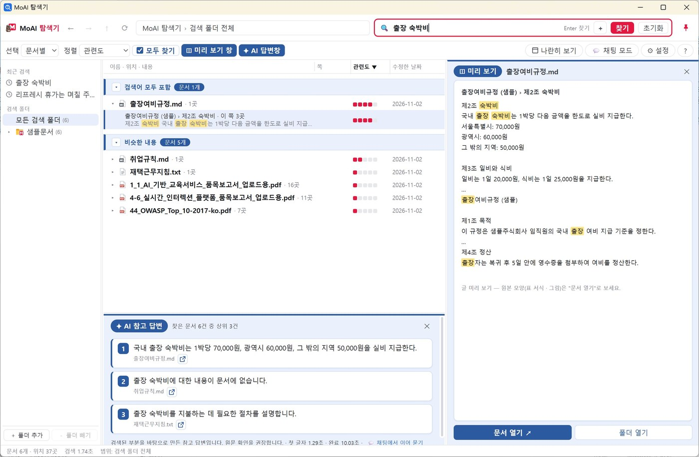
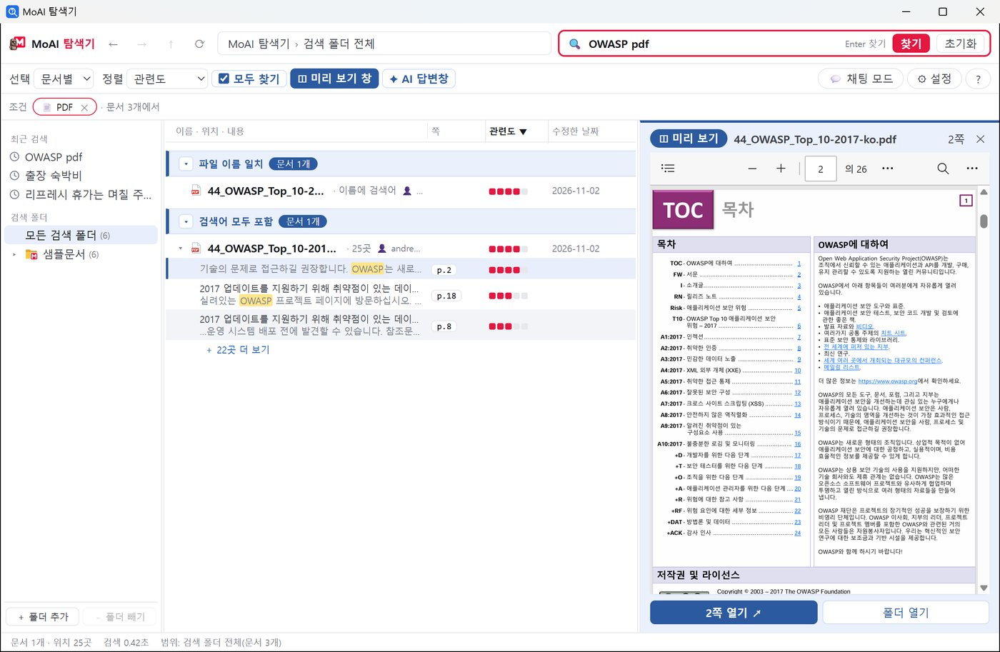
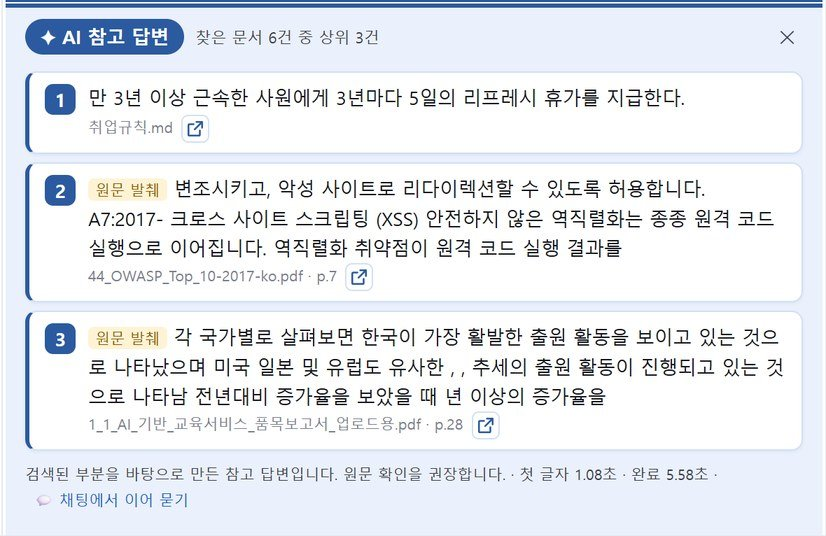
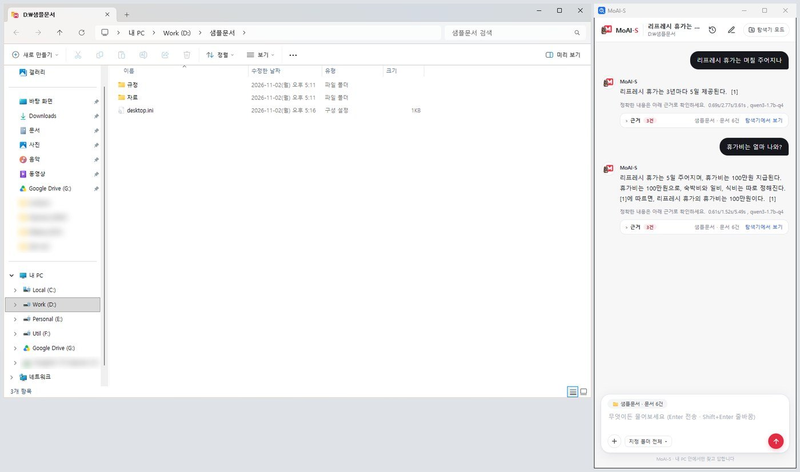
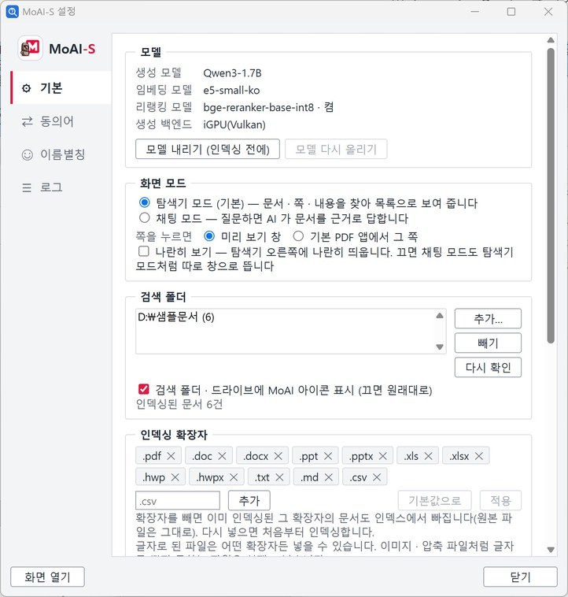
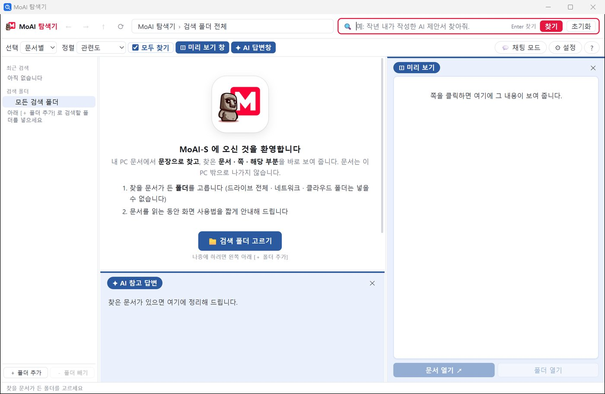
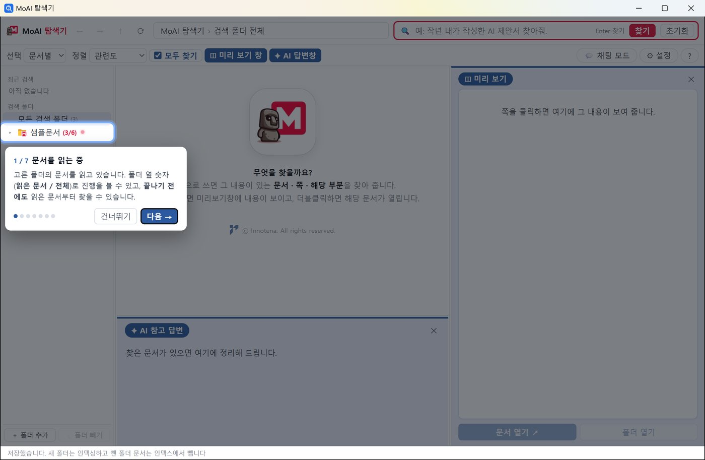

내 PC 문서, 문장으로 찾으세요
파일 이름이 기억나지 않아도 괜찮습니다. “작년 내가 작성한 AI 제안서”처럼 문장으로 쓰면 그 내용이 있는 문서 · 쪽 · 해당 부분을 바로 보여 주고, AI 가 찾은 문서를 정리해 줍니다. 문서는 이 PC 밖으로 나가지 않습니다.

무엇을 할 수 있나요
탐색기처럼 익숙한 화면에서 찾고, 보고, 바로 엽니다.
문장으로 찾고, 모두 찾기
낱말이 아니라 하고 싶은 말을 그대로 쓰세요. 뜻이 비슷한 문서까지 함께 찾습니다.
- 검색어 모두 포함 · 일부 포함 · 비슷한 내용으로 묶어 보여 줍니다
- 문서마다 해당 쪽과 발췌를 펼쳐 볼 수 있습니다
- 관련도 · 이름 · 수정한 날짜로 정렬, 폴더 범위 지정

미리 보기와 조건 검색
쪽을 한 번 누르면 미리 보기 창에 그 쪽이, 두 번 누르면 문서가 열립니다. PDF 는 원본 모양 그대로 해당 쪽을 보여 줍니다.
“PDF”, “작년”, “내가 만든”처럼 문장 속 조건을 알아듣고 조건 칩으로 범위를 좁힙니다.

AI 참고 답변
[✦ AI 답변창] 을 켜면 찾은 문서 상위 3건을 AI 가 한 줄씩 정리합니다. 문서 이름 옆 아이콘으로 원문을 바로 열어 확인하세요.
단축키 Alt+A 로 켜고 끕니다.

채팅 모드 — 문서를 근거로 묻기
Windows 탐색기 옆에 대화 패널이 붙어, 지금 보고 있는 폴더의 문서를 근거로 답합니다. 답 아래 근거 문서와 쪽이 함께 나오고, 이어서 물어볼 수 있습니다.

알아서 최신으로
- 검색 폴더의 문서가 바뀌면 자동으로 다시 읽습니다
- 문서 내용을 먼저 넣어 바로 찾게 하고, 무거운 계산은 쉬는 동안 뒤에서 합니다
- 동의어 · 이름 별칭 사전을 쌓아 일상어 · 영문 계정으로도 찾습니다
- 시스템 · 프로그램 · 개발 도구 폴더는 알아서 건너뜁니다

시작하기
설치하고 폴더 하나만 고르면 됩니다. 처음 실행하면 화면 사용법을 7단계로 짚어 드립니다.
MoAISearch_Setup_0.1.2.exe 를 내려받아 실행합니다. 관리자 권한이 필요 없습니다.

다운로드
모든 파일은 GitHub 릴리스에 있습니다.
MoAI-S 설치 파일
프로그램 + 기본 AI 모델(Qwen3-1.7B · e5-small-ko · bge-reranker). 대부분은 이것만 설치하면 됩니다.
⬇ MoAISearch_Setup_0.1.2.exe (1.46GB)정밀 모드 모델 (선택)
더 큰 Qwen3-4B 모델로 답의 정확도를 높입니다(첫 글자까지 약 2배 느림). GitHub 파일 크기 한도로 3개 파일로 나뉘어 있습니다 — 세 파일을 같은 폴더에 받고 .exe 를 실행하세요. 기본 프로그램을 먼저 설치해야 합니다.
권장 사양
| 항목 | 내용 |
|---|---|
| 운영체제 | Windows 10 · 11 (64비트) |
| 디스크 | 프로그램 · 기본 모델 약 1.5GB (정밀 모드 모델 +2.4GB) + 문서 인덱스 |
| 그래픽 | 내장 GPU(Vulkan)가 있으면 AI 답이 빨라집니다. 없으면 CPU 로 동작합니다. |
| 인터넷 | 설치 뒤에는 필요 없습니다. 검색 · AI 모두 PC 안에서 돕니다. |
자주 묻는 질문
문서가 외부로 전송되나요?
아니요. 문서를 읽어 만든 인덱스와 AI 모델이 모두 설치 폴더 안에 있고, 검색 · 요약 · 채팅도 이 PC 에서만 처리합니다.
어떤 폴더를 검색 폴더로 넣을 수 있나요?
PC 안의 일반 폴더입니다. 드라이브 전체(C:\ 등), 네트워크 폴더, OneDrive · Google Drive 같은 클라우드 동기화 폴더, 시스템 폴더는 넣을 수 없습니다.
인덱싱은 얼마나 걸리나요?
문서 수와 PC 사양에 따라 다릅니다. 내용부터 먼저 넣어 바로 찾을 수 있게 하고, 문장 뜻 검색을 위한 계산은 뒤에서 이어서 합니다. 앱을 꺼도 다음에 남은 문서부터 이어 갑니다.
업데이트는 어떻게 하나요?
새 버전 설치 파일을 그대로 실행하면 됩니다. 검색 폴더 · 설정 · 인덱스는 그대로 남습니다.
더 자세한 내용은 사용 설명서를 보세요.